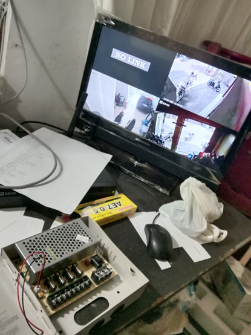
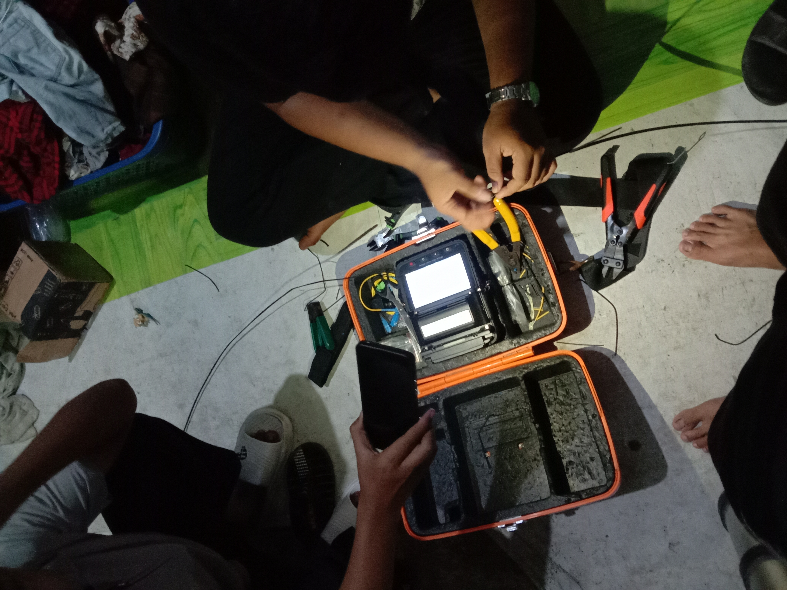
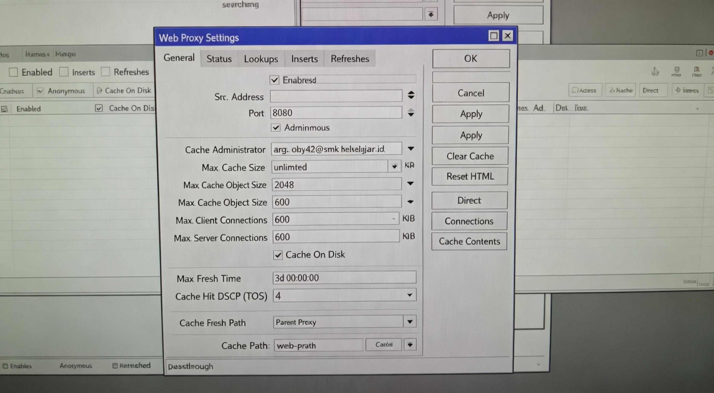
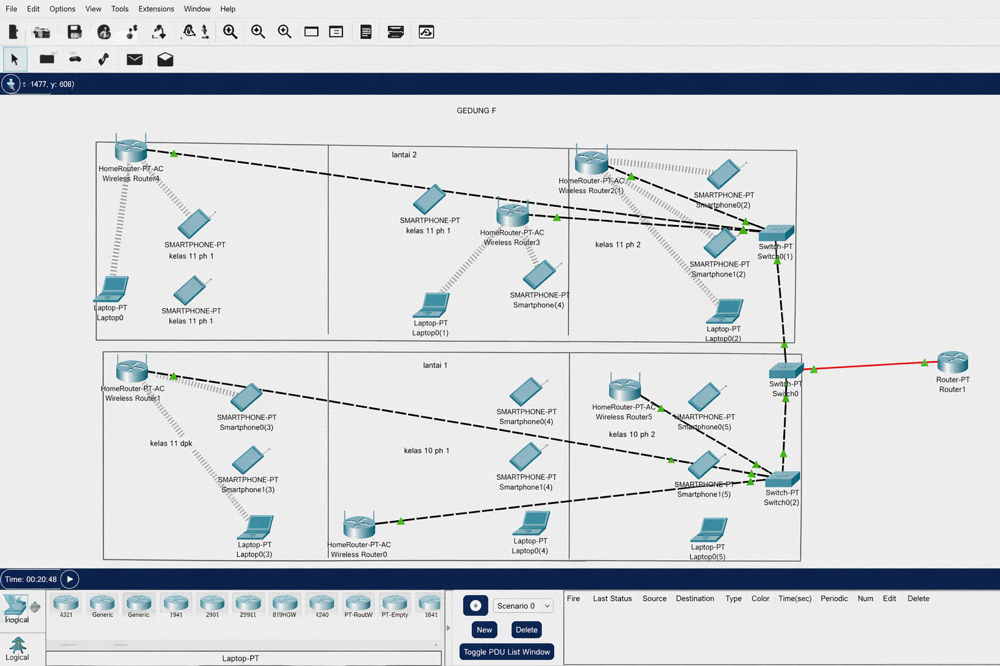
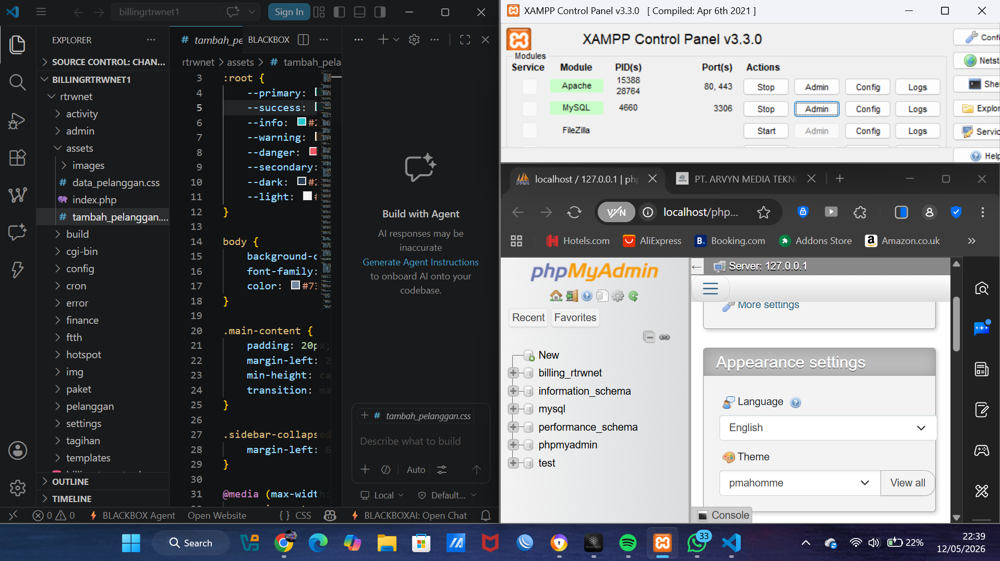

// HIGHLIGHT PROJECT


⟨ WELCOME TO MY PORTFOLIO ⟩
INITIALIZING SYSTEM...
 SERVER
SERVER
Setup dan konfigurasi web server Apache/Nginx di server perusahaan isp dengan instalasi mengunakan proxmox.

🌐'"> NETWORKINGDokumentasi kegiatan instalasi jaringan dan cctv di lapangan.

🔌'"> FTTHProses instalasi fiber optik di lokasi pelanggan.

🖥️'"> MIKROTIKSetup router MikroTik untuk jaringan perusahaan.

🗺️'"> TOPOLOGIDesain dan implementasi topologi jaringan perusahaan.

💾'"> DATABASESetup dan administrasi MySQL/PostgreSQL database atau mysql di xampp.

Nama lengkap: Arga Oky Saputra
Tempat, Tahun Lahir: Bojonegoro, 2007
Pendidikan: SMKN 1 Bojonegoro — TekniK Jaringan,Komputer dan Telekomunikasi
Domisili: Bojonegoro
Email: argasapurta234@gmail.com
Lulusan SMKN 1 Bojonegoro jurusan Teknik Jaringan Komputer dan Telekomunikasi dengan pengalaman PKL di perusahaan ISP selama 6 bulan. Memiliki kemampuan dalam konfigurasi jaringan Mikrotik, FTTH, virtualisasi server menggunakan Proxmox, administrasi server Linux Debian, serta troubleshooting jaringan dan perangkat hardware. Terbiasa bekerja dalam tim, disiplin, dan memiliki minat besar di bidang Network Engineer dan IT, cukup aktif dalam sebuah organisasi dan memiliki sikap leadership yang cukup baik.
📅 [Juni — Desember / 2025]
Technical Support & Infrastructure Intern
Bertanggung jawab dalam pengelolaan dan maintenance infrastruktur jaringan perusahaan. Melakukan pemasangan fiber optic dari ODP ke ONT yang ada di client. Melakukan konfigurasi perangkat jaringan termasuk router MikroTik, switch, ONT, CCTV(DVR/NVR) dan access point. Menangani instalasi dan troubleshooting jaringan FTTH untuk klien perusahaan, Memegang akses sistem perusahan mulai dari proxmox, mikrotik, dan olt perusahaan.
📅 [2026]
Freelance
Melakukan instalasi ruangan dan juga pembuatan server untuk CCTV dan internet. menyediakan jasa pembuatan website untuk memasarkan atau memperkenalkan sebuah product ataupun instansi.
Saya terbuka untuk peluang kerja, kolaborasi project, atau sekadar berdiskusi seputar teknologi jaringan dan IT. Jangan ragu untuk menghubungi saya melalui platform di bawah ini.
Tertarik dengan profil saya? Download curriculum vitae saya untuk informasi lebih lengkap mengenai pengalaman dan keahlian saya.
⬇️ DOWNLOAD CVCV_ARGA_OKY_SAPUTRA
// DOKUMENTASI — WEB SERVER

// SERTIFIKAT 06